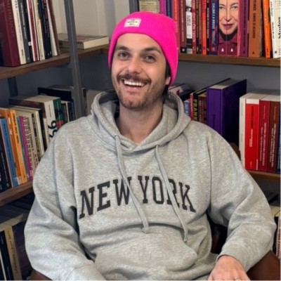

Portfólio · Design & direção de arte
Ideiasque ganhamforma.
Sou Rodrigo Moraes, designer e diretor de arte. Crio narrativas visuais, ilustrações e experiências gráficas que conectam marcas, histórias e pessoas.
Explorar trabalhos ↘
arte, ilustração e conteúdo
13anos
Atuação
Direção de arteIlustraçãoManipulação de imagensDesenvolvimento de identidade visualDesign de produtos e peças digitais
01 / Galeria
Galeria
Projetos, estudos e experimentações. Toque em um trabalho para ver os detalhes.
Infográficos de Futebol — Footballco
E-book Mundial de Clubes FIFA 2025
02 / Sobre
Olhar atento.ideias em movimento
Sou designer e diretor de arte, com 13 anos de experiência em campanhas, conteúdo digital, ilustração e design editorial. Passei por projetos de comunicação, publicidade e marketing esportivo, e levo para cada um pensamento visual, repertório gráfico e atenção à narrativa.
Nos últimos anos, me dediquei ao universo do futebol, criando artes, ilustrações e sistemas visuais para conteúdo esportivo. Também tenho experiência em campanhas 360º e em projetos que conectam o digital ao impresso.
13+Anos de experiência
4Anos no esporte
360ºVisão de campanha
03 / ContatoVamos criar
Vamos criar
algo relevante.
Disponível para novos projetos, parcerias e oportunidades em design, direção de arte e conteúdo digital.
rod_eug@hotmail.com